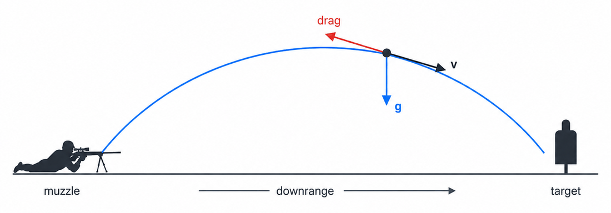

Ballistics Toolkit is built on one shared trajectory engine, a small C++ core compiled to WebAssembly that runs in your browser with no backend. Every calculator and simulator calls it, so results stay consistent across the suite.
The engine integrates a bullet's flight step by step under gravity, aerodynamic drag, the local atmosphere and wind, with optional empirical corrections for spin. The result is a single trajectory: drop, drift, velocity and time of flight to any range.
The simulators put that trajectory into a live setting: you read the wind through mirage and flags and shoot at scored F-Class paper targets, or reactive steel that swings when hit. The statistical tools instead fire a load many times over, varying velocity, wind and aim, to show the group and scores it would produce.
It is a modified point-mass trajectory engine: the bullet is treated as a point with mass and a drag profile, integrated through time, with empirical corrections layered on for spin drift and crosswind jump. It is built for education, comparing loads, simulation and planning.
It is not a full 6-degree-of-freedom model of the spinning bullet, and it does not capture every real-world effect. Deliberately left out: Coriolis and Eötvös drift from the Earth's rotation, powder temperature sensitivity (the muzzle velocity you enter is used as-is, so enter a value chronographed at your conditions), bore and rifle imperfections, and your own measurement error in wind, range and atmosphere. Treat the output as a planning estimate, not a guarantee.
A flying bullet is pushed by three things: gravity pulling it down, aerodynamic drag opposing its motion through the air, and, because it is spinning, small gyroscopic effects sideways and vertically. The engine sums these into an acceleration and steps the bullet forward through time. The bullet's state is its position \(\mathbf{x}\) and velocity \(\mathbf{v}\):
\[ \frac{d\mathbf{x}}{dt} = \mathbf{v}, \qquad \frac{d\mathbf{v}}{dt} = \mathbf{a} = \mathbf{a}_{\text{drag}} + \mathbf{g} + \mathbf{a}_{\text{spin}}, \qquad \mathbf{g} = (0,\,-9.80665,\,0)\ \tfrac{\text{m}}{\text{s}^2} \]
This is a 3-DOF translational model: position and velocity are integrated, the bullet's orientation is not. The effects that really depend on the spin axis are folded back in as extra accelerations and impulses (see Spin corrections), which is what "modified" point-mass means.
Drag is the main force slowing the bullet, and it changes sharply with speed, especially near the sound barrier. Rather than one drag number, the engine pairs a standard drag function (a reference curve for a typical bullet shape) with your ballistic coefficient (BC), which says how your bullet compares to that reference. A higher BC means the bullet holds speed better, so less drop and less wind drift.
Each drag function is a small table indexed by speed (fps). Every velocity band carries a fitted pair \((a, m)\) so the retardation (deceleration, fps per second) is a clean power law, picked by a binary search on the air-relative speed:
\[ r(v) = a\,v^{m}, \qquad \mathbf{a}_{\text{drag}} = -\,\frac{a\,v_r^{\,m}}{\text{BC}}\cdot\frac{\rho}{\rho_0}\;\hat{\mathbf{v}}_r, \qquad v_r = \lVert \mathbf{v}-\mathbf{w}\rVert \]Here \(\mathbf{w}\) is the local wind, \(\rho\) is the current air density and \(\rho_0 = 1.225\ \text{kg/m}^3\) is the reference density. Within this point-mass model, once the drag function and BC are fixed, bullet diameter and weight do not separately affect drag; they re-enter later through the spin and stability corrections, where mass, caliber and length matter.
Because drag depends on speed and speed keeps changing, there is no closed-form path; it is computed step by step. The engine uses a second-order Runge–Kutta (RK2) midpoint step. A naive step trusts the slope at the start and overshoots; RK2 instead samples the slope at the middle of the step and uses that for the whole step. That costs a second acceleration evaluation per step (two instead of one), but it is accurate enough to allow much larger steps for the same error, so it is a good trade overall.
\[ \mathbf{v}_{1/2} = \mathbf{v}_0 + \tfrac{1}{2}\mathbf{a}_0\,\Delta t, \qquad \mathbf{a}_{1/2} = \mathbf{a}\!\left(\mathbf{x}_{1/2},\,\mathbf{v}_{1/2},\,t_0+\tfrac{1}{2}\Delta t\right) \] \[ \boxed{\;\mathbf{v}_{1} = \mathbf{v}_0 + \mathbf{a}_{1/2}\,\Delta t, \qquad \mathbf{x}_{1} = \mathbf{x}_0 + \mathbf{v}_{1/2}\,\Delta t\;} \]The simulation marches until the bullet passes the requested distance (or a time cap); values at exact distances are interpolated between the two stored points that bracket them.
Drag scales with air density, which depends on temperature, altitude and humidity, so the same bullet drops and drifts less in thin mountain air than in cold, dense sea-level air. You enter temperature, altitude and humidity; pressure is derived from the altitude. Density comes from the ideal gas law with a humidity correction (moist air is slightly less dense, the \(0.378\,e\) term):
\[ \rho = \frac{P - 0.378\,e}{R_{\text{air}}\,T}, \qquad R_{\text{air}} \approx 287.05\ \tfrac{\text{J}}{\text{kg}\cdot\text{K}}, \qquad e = \text{RH}\cdot 611.2\,\exp\!\left(\frac{17.67\,T_c}{T_c + 243.5}\right) \]Pressure follows the International Standard Atmosphere power law from altitude \(h\):
\[ P = P_0\left(1 + \frac{L\,h}{T_0}\right)^{-g/(R_{\text{air}} L)}, \qquad P_0 = 101325\ \text{Pa},\; T_0 = 288.15\ \text{K},\; L = -0.0065\ \text{K/m} \]Drag acts on the bullet's velocity relative to the air. So wind enters by subtracting it from the bullet's velocity before computing drag: the \(\mathbf{v} - \mathbf{w}\) you already saw in the drag equation. A crosswind tilts the drag vector slightly downwind, and integrated over the flight that becomes lateral drift. There is no separate "wind drift formula"; drift, the small range effect of a head or tail wind, and the interaction of wind with a slowing bullet are all handled by the same integration path.
The model never tracks which way the bullet is pointing: ordinary wind drift falls out of air-relative drag alone. The two effects that do depend on the bullet's orientation, spin drift and the crosswind's vertical jump, are handled separately under Spin corrections.
Calculator-style tools use a single uniform wind across the flight. The simulators sample a full wind field that varies with range, crossrange and time, so the bullet flies through different wind at every point; that field is described below.
Rifling spins the bullet to keep it pointed forward. A spin-stabilized bullet's center of pressure sits ahead of its center of mass, so without spin it would tumble; the spin holds it nose-forward. That spin also produces two small effects at long range, spin drift and crosswind jump. Both are real gyroscopic effects, but here they are modeled with formulas from Bryan Litz (Applied Ballistics): fitted approximations, physics-motivated curves with empirically fitted constants, rather than derived from first principles or integrated as full orientation dynamics. They are adapted here to run inside the step-by-step integrator.
A useful way to think about it: a spinning bullet behaves like a gyroscope, so a force on it shows up as motion about a perpendicular axis, the way a spinning top leans and circles instead of falling. That 90° response is where both effects come from.
A stability factor \(S_g\) measures the spin margin, starting from the Miller twist rule and corrected to the actual velocity and air conditions:
\[ S_{g,0} = \frac{30\,m}{t^{2}\,d^{3}\,l\,(1+l^{2})}, \qquad S_g = S_{g,0}\left(\frac{V}{2800}\right)^{1/3}\frac{T_R}{519}\cdot\frac{29.92}{P_{\text{inHg}}} \]with \(m\) in grains, \(d\) in inches, \(l = L/d\) the length in calibers, \(t\) the twist in calibers per turn, \(V\) in fps, \(T_R\) in °Rankine and \(P_{\text{inHg}}\) in inches of mercury. As a rule of thumb \(S_g > 1.4\) is stable. The Miller rule assumes a roughly uniform bullet density, so it is approximate and can under-estimate plastic-tipped bullets; a tip-corrected form fits those better.
Litz fits the net sideways displacement as a function of time of flight (for a right-hand twist the bullet drifts right, roughly 0.8–0.9 MOA at 1000 yd for a typical match load):
\[ \text{SD}(t) = 1.25\,(S_g + 1.2)\;t^{1.83}\quad[\text{inches}] \]A point-mass integrator cannot simply add a displacement on top of its path, so the engine differentiates the law twice and injects it as a sideways acceleration, letting the same RK2 step reproduce the curve:
\[ a_{\text{spin}}(t) = \frac{d^{2}\text{SD}}{dt^{2}} = 1.83\cdot 0.83\,C\,t^{-0.17}, \qquad C = 1.25\,(S_g + 1.2) \]A purely horizontal crosswind produces a small vertical shift of impact. It is the same gyroscopic 90° response, triggered as the bullet first meets the wind. Litz gives the size as a sensitivity (roughly 0.3–0.5 MOA per 10 mph at 1000 yd). For a right-hand twist, wind from the right throws the strike high and wind from the left low:
\[ \text{sens} = 0.01\,S_g - 0.0024\,\frac{L}{d} + 0.032 \quad[\text{MOA per mph}] \]With that understood: each step, the engine compares the crosswind the bullet sees to the previous step and fires an impulse proportional to the change \(\Delta w_\perp\), so a constant wind fires its whole jump at the muzzle while a gust met downrange fires there. That change sets a small jump angle \(\Delta\theta = \text{sens}\cdot\Delta w_\perp\) (with \(\text{sens}\) in MOA per mph, converted to radians), applied as a kick to the bullet's vertical velocity, where \(\text{hand}=\pm1\) sets the sign from the twist direction:
\[ \Delta v_y = -\,V\,\Delta\theta\cdot \text{hand} \]This assumes the jump is effectively instantaneous, that the muzzle sensitivity still applies downrange, and that successive wind changes add up linearly, all approximations.
Before any table or shot, the engine sights in the virtual rifle: it finds the launch angles that put the bullet on the target center at the zero range in calm conditions. It is solved iteratively: fire a trial trajectory, measure the miss \(\varepsilon\) at the target plane, and correct the launch pitch and yaw toward it (with damping):
\[ \Delta\text{pitch} = -\arctan\!\frac{\varepsilon_y}{R}, \qquad \Delta\text{yaw} = -\arctan\!\frac{\varepsilon_x}{R} \]A few iterations converge, and everything you then see, drop and drift, is measured relative to that zero.
Two simulator features, the wind field and mirage, are built from the same source of smooth randomness: simplex noise (Ken Perlin's gradient noise). Unlike a table of independent random numbers it is continuous: nearby points return nearby values, with no grid and no sudden jumps, and it is cheap to evaluate and to differentiate. The toolkit always uses one axis as time so the pattern animates: the wind field samples it in 3D (two spatial axes plus time), mirage in 3D and 4D. On its own it is just smooth hills and valleys; the swirling appears later, when the wind takes its curl.
The simulators do not blow one constant wind down the range; they generate a wind field that swirls, varies along the range, and evolves over time, so reading it (via mirage and flags) is a genuine skill. You can explore it in the Wind Generator tool.
Real air is nearly incompressible: it does not pile up or vanish anywhere. A field of plain random vectors breaks that. The trick is to take a smooth scalar potential \(\psi\) (from simplex noise) and use its curl as the wind, which is mathematically divergence-free in this 2D model:
\[ \mathbf{w} = \left(\frac{\partial\psi}{\partial y},\,-\frac{\partial\psi}{\partial x}\right), \qquad \nabla\cdot\mathbf{w} = 0 \]A helpful picture: read \(\psi\) like a topographic or weather map. The wind runs along the contour lines, circling the highs and lows, and is fastest where the lines bunch, the way wind tracks the isobars on a weather chart.
Why not simulate the air for real? True computational fluid dynamics would solve the Navier–Stokes equations on a fine grid, far too expensive to run live in a browser. It would not buy much realism here anyway: a real solve still needs boundary conditions, the gusty inflow that drives the whole field, and those are effectively random, so the important randomness has to be invented either way. Curl noise gives the same coherent, plausible, divergence-free eddies directly and cheaply. Several layers stack: a broad slow base wind, a medium gusting layer, and fine turbulence. Each is normalized and reshaped, and the whole field advects (drifts downwind) so eddies travel down the range.
What mirage is: on a warm day the ground heats the air just above it, and that warm air rises in shifting cells. Warm and cool air bend light by different amounts, so when you look through a scope at a distant target the image wavers and "boils." In wind the boil leans, or "runs," in the wind's direction and flattens as the wind builds, so reading it is one of the main ways shooters judge the wind downrange.
How it is drawn: the mirage is a screen-space effect. Each pixel of the scope view is nudged up and down by simplex noise tied to the live wind, so it shows the cues a real shooter reads: which way the boil runs, how fast it churns, and how strong it is. It is a visual approximation, not a simulation of light actually bending.
Both 3D simulators draw mirage, and in both the boil washes out as the wind builds, gone by about 15 mph. They differ in how they sample the wind field, and the Steel Sim adds a separate lens blur on top. The three pieces below cover each in turn.
The F-Class Sim stacks several air layers along the line of sight, each sampling the wind field at its own distance, so near layers show as large soft features and far layers as small sharp ones. The range is bounded and the target sits at a fixed, known distance, so the sample distance comes from geometry: the scope's view ray is intersected with the range's bounding box. The rifle scope, held on the target, samples at the target distance; the spotting scope, which you can pan around the range, samples wherever its ray meets the box. The boil sits low and fades into the open sky above the target.
The Steel Sim uses a single averaged layer plus the scope's focus distance. Because on an open range it cannot know which distance you are watching, the focus distance tells it how far downrange to sample the wind. The shimmer is stronger the more air the sight looks through, so nearby ground barely boils, and it fades as you zoom out.
The Steel Sim scope also has a focus blur (depth of field), separate from the mirage: the scene is drawn with a depth map, and a lens model softens each pixel by how far it sits from the distance you are focused on, so only that range is sharp. The focus distance feeds both the blur and the mirage, but they are separate effects, and the shimmer itself is never blurred.
A trajectory is a list of points; to register a hit the engine finds where the path crosses a target and whether it lands on the plate. It pulls the short segment that spans the target, transforms it into the target's frame (the plate lies at \(z=0\)), solves the crossing, and tests the point against the plate outline, a rectangle (\(|x|\le \tfrac{w}{2},\,|y|\le \tfrac{h}{2}\)) or an ellipse, expanded by the bullet radius so a round that just catches the edge still counts ("line breaks the plate"):
\[ t = \frac{-\,z_{\text{start}}}{z_{\text{end}} - z_{\text{start}}}, \qquad \mathbf{p}_{\text{hit}} = \mathbf{p}_{\text{start}} + t\,(\mathbf{p}_{\text{end}} - \mathbf{p}_{\text{start}}) \]The same geometry scores paper targets: a hit is graded by its radial distance from center against each ring radius, expanded by the bullet radius.
How the crossing is found differs by app. The calculators and the F-Class Sim precompute the whole trajectory, then intersect that finished path with a stationary target. The Steel Sim integrates each bullet live as the game runs, advancing it a frame at a time and testing the short hop against every target's current pose, which is what lets it keep several bullets in flight and hit moving targets. With many plates, a spatial grid culls which ones to test, and the earliest crossing wins. A confirmed hit then draws a decal mark and a particle dust cloud, and in the Steel Sim it kicks off the plate's reaction.
On the steel range a confirmed hit doesn't just register: the plate reacts as a small rigid body, so it swings, twists and rings the way real steel does. Its mass comes from geometry (area × thickness × the density of steel, 7850 kg/m³) and its moment of inertia from the thin-plate formula, so a tall plate and a wide plate of the same weight turn differently.
The hit applies the bullet's momentum, scaled by how square it is (\(\cos^2\) of the impact angle), as an impulse at the contact point. Because that point is usually off the center of mass, it splits into a push and a twist, so a center hit swings the plate and an edge hit spins it:
\[ \Delta\mathbf{v} = \frac{\mathbf{J}}{m}, \qquad \boldsymbol\tau = \mathbf{r}\times\mathbf{J}, \qquad \dot{\boldsymbol\omega} = I^{-1}\boldsymbol\tau \]The plate hangs from chains modeled as stiff one-way springs (they pull but never push), and the whole thing is stepped with semi-implicit Euler under gravity, chain tension and damping until it settles. Orientation is carried as a quaternion (renormalized each step) so a tumbling plate avoids gimbal lock.
Each plate keeps its own paint texture, a small RGBA image of its face (front and back stored in the two halves of one image), filled with the paint color to start. When a round lands, the engine maps the impact point onto the plate's local surface coordinates, converts that to a pixel in the texture, and draws a splatter there in C++: a patch of bare metal showing through the paint (blended soft at the edge) ringed with a few ragged spikes. The marks are written straight into the image and they accumulate, so the face builds up a record of every hit, the same paint-and-spatter you read on real steel.
To display it, the renderer reaches that texture as a typed-array view onto WebAssembly memory, so the engine never allocates a copy to hand it over, and then writes those bytes into a shared GPU texture atlas. That last step still copies the pixels into the atlas (and uploads them to the GPU), so it is not strictly zero-copy; the saving is just that reading the texture out of WebAssembly costs no extra allocation.
Real shooting isn't one perfect shot: muzzle velocity varies, the wind breathes, and no one holds a perfect zero. The Hit Simulator and Target Simulator fire the same shot many times with randomized inputs and study the spread, a Monte Carlo simulation. Every shot runs a full trajectory through the same engine, so second-order effects (a slow round spending longer in the wind, say) fall out on their own. Each shot draws:
| Source | Distribution |
|---|---|
| Muzzle velocity | Gaussian about the nominal MV, with your SD |
| Wind (cross / head / vertical) | Gaussian about the mean wind, each with its own SD |
| Rifle accuracy | Uniform within a circle whose diameter is the group's MOA setting |
| Scope cant | Uniform within ± the cant setting |
Each Gaussian draw is clipped at three standard deviations so rare tail events can't dominate a run. The two apps ask different questions:
A few simulator features go beyond a single computed shot and are worth a mention.
In Pair Fire you can set your opponent to the computer. The interesting part is what the difficulty levels actually change: only the AI's wind reading. Every AI shooter fires through the same ballistics engine and the same rifle dispersion you do, holds for both wind drift and crosswind jump, and takes a realistic skill-based pause before each shot. An easy AI misjudges the wind badly, reading it flat and stale with a large percentage error; a hard AI reads it accurately, weights the near-muzzle wind by time of flight, and shoots near-clean. Beating the computer is a wind-reading contest, not a reflex one.
The steel range has an optional hunting mode: prairie dogs that pop up and down, and boars that walk along the range. Because the Steel Sim integrates every bullet live, frame by frame (see Impact detection), moving targets are hit honestly: the bullet and the target both advance in real time, and the hit registers against wherever the target actually is when the round arrives.
The F-Class Sim can stream a live match to a friend, with no server of its own in the loop. It is host-authoritative: the host runs the one true simulation and sends a WebRTC video and audio stream of its view; the guest displays it and sends key and button presses back. A PeerJS broker and public STUN servers are used only to set up the connection, and there is no relay (TURN) in the media path unless one is configured. Because the link is direct, each participant's IP address is visible to the other, so it is meant for people you know.